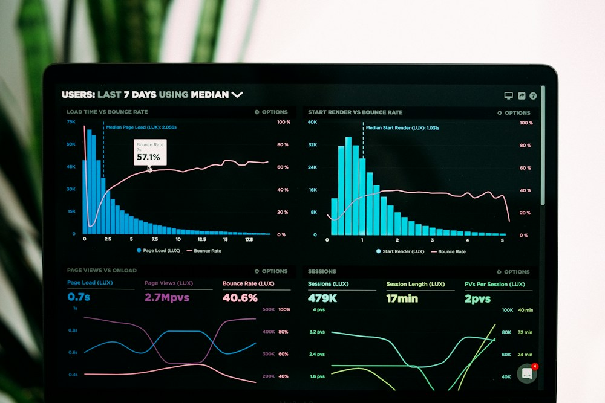

Requirements & stakeholders
Workshops, business documentation, user stories and functional specifications that give stakeholders and delivery teams a shared direction.
Business Analysis · Business Analytics
I’m Geraldine Ilamosi Adeniyi. I turn business needs into clear requirements, better processes and useful reporting — helping teams connect insight with action.
Requirements · Process improvement · KPI reporting
01 / About Geraldine
Business analysis brings people, processes and information into the same conversation.
My work spans requirements gathering, stakeholder collaboration, process modelling and operational reporting. I help clarify what a business needs, document how it works and support the delivery of practical improvements.
With a background in public administration and history, I bring an understanding of organisations and context to analytical problems. My focus is on making complex information easier to understand — and easier to act on.
Geraldine Ilamosi AdeniyiUnited Kingdom · Business Analysis & Analytics
02 / What I bring
Workshops, business documentation, user stories and functional specifications that give stakeholders and delivery teams a shared direction.
Current-state mapping, gap analysis and future-state design that make bottlenecks and opportunities easier to identify.
KPI reporting, operational analysis and performance insights that help management understand what is happening and where to focus.
03 / Selected work
Explore the featured Health Link case study and its supporting documents. Three proposed case studies show the additional areas being developed.
 Featured / Analysis & designExplore case study ↗
Featured / Analysis & designExplore case study ↗A hospital digital platform case study connecting business needs, requirements, user stories and patient-journey wireframes. Explore eight supporting deliverables, including the requirements workbook and 13-slide wireframe deck.
Explore full case study ↗Download project documents ↓A proposed examination of operational hand-offs, reporting gaps and opportunities for a clearer delivery workflow.
Where are process delays occurring, and what information does management need to act?
Map an operational workflow, identify hand-offs and reporting gaps, and design a more consistent way to monitor delivery.
Current-state process map; gap analysis; future-state workflow; reporting specification.

Proposed case study · 03A proposed reporting framework connecting service activity, data quality and management priorities.
Which measures would give a service team a reliable picture of performance?
Develop a reporting framework that connects service activity, data quality and management decisions in a healthcare or service environment.
KPI definitions; data-quality checklist; dashboard wireframe; reporting cadence.
A proposed case study translating stakeholder needs into user stories, acceptance criteria and a validation plan.
How can teams maintain alignment between stakeholder needs and the delivered product?
Structure a business need into clear requirements, user stories and acceptance criteria, with traceability through delivery and testing.
Stakeholder map; requirements matrix; user stories; acceptance criteria; UAT plan.
Health Link includes supplied analysis and design documents. The other three cards remain proposed case studies, illustrated with stock photographs.
04 / Experience
7ven Oaks Ltd · United Kingdom · Volunteer
Support e-commerce delivery through stakeholder workshops, market research, process models and wireframes. Translate requirements into functional specifications and user stories, and collaborate with developers and designers on backlog priorities.
Amdor Analytics
Supported healthcare and operational projects through requirements gathering, workflow documentation and process analysis. Worked with cross-functional stakeholders, tracked delivery in Jira, and contributed KPI dashboards and business reports.
05 / Education & development
Adekunle Ajasin University · 2024
Nassarawa State University · 2014
PRINCE2® and Agile Course · Almond Careers · 2026
Amdor Analytics · 2025
MOS
06 / Contact
For business analysis opportunities, project collaboration and conversations about clearer requirements, stronger processes and useful reporting.
Geraldine.Adeniyi@gmail.com ↗Start with the question
Share the role, project or business challenge you have in mind.
Email Geraldine ↗